Top 20 Homesteading Tools
if you're serious about swapping the urban rat race for a life of frugal, back-to-the-land self-sufficiency, the right equipment will make the difference between paradise and peril
By John Vivian Illustrations by Will Shelton
Issue # 185 - April/May 2001
BASIC HAULING
1. WHEELED MACHINE
You'll need a properly sized, wheeled, perhaps engine-powered machine to do the heavy hauling. The capacity you'll need and the amount you'll pay will be determined by the size and topography of your place, the nature of the work you intend to carry out, your financial resources, maintenance tools and skills, and available storage facilities. Ideal, albeit impractical for most of us, would be a team of horses, mules or oxen along with a hay wagon for field work, a buckboard for trips to town, and a barn and paddock. If you obtain beasts of burden, you'll also need pasture, hay and grain to sustain them.
The most universally capable modern homesteading machine we know of is a commercial-grade compact diesel tractor. We like Kubota tractors, John Deere's 20- to 48hp 2000 class and New Holland's Boomer line. Even the smallest models - which look like sturdily built lawn tractor mowers - are equipped with powerful diesel engines and industrial quality transmissions and running gear. They also sport a three-point rear hitch that will mount commercial farm land plows, harrows and rakes and provide attachment points for a hay or field corn cutter bar or silage chopper, a sprayer or buzz saw. These tractors include a hydraulic system that will power remote motors on the chopper's flails, the sprayer's pump or the saw's blade. They'll also mount hydraulic cylinders to pull the plow up or dig it in and hold it down and will run any number of other hydraulic attachments such as a front-end snow thrower or plow blade, a bucket loader to carry soil, gravel or budding bricks, a rear-mount backhoe to dig trenches, a forklift to raise hay bales into your barn loft, an electric generator to power the house and barn if the power lines go down in a storm, or a pump to fill a pond or empty the cellar after a flood. A modern, small diesel tractor is a major investment for a ranch or truck-farming operation - but one that will expand your homesteading capabilities beyond muscle-power, and will pay off every day for a lifetime or two of strenuous use.
An alternative to a new and relatively expensive tractor is a well-running antique. They're not quite as capable or dependable as a contemporary tractor, but they're considerably less expensive. Small, still working antique tractors such as a late - '40s or `50s Farmall Cub or a low-riding, auto-style Ford 9N currently sell for about $2,500, a bit more if they're outfitted with new rear tires or hydraulics. If at all possible, buy one with a newly rebuilt engine, an onboard hydraulic system, a rear-mount three-point hitch and one or two mechanical power takeoffs (PTOs) rather than a drawbar.
Invest in a modern underframe (Woods), rotary brush hog or field mower and other post-1950s attachments. Look carefully, because museum-quality antiques from the 1930s and earlier often lack hydraulics and PTOs (Polk's, the Antique Tractor Magazine, published by Dennis Polk Equipment of New Paris Indiana (subscriptions 219-8313555) and Farm Collector from the folks at Odgen Publications in Topeka, KS (subscriptions 800-678-4883) are two great sources of info on older models better suited for displaying on the front yard than grinding in the cornrows).
If you intend to do any really heavy work such as logging, trenching for soil-drainage pipe, digging in a septic tank or cutting a logging road through heavy woods, consider a full-size industrial tractor with a log grapple or excavating bucket on the front and a backhoe on the stem. New, they cost five or six figures. Good used ones cost about $15,000.
Unless you have substantially deep pockets, avoid any well-used but un-rebuilt machine that rides on articulated tracks. Its track link pins are sure to be worn through and destined to break at the most inopportune times.
DEERE'S GATOR: For moderately heavy hauling chores that do not demand a bulldozer or a two-ton hydraulically equipped tractor, see your local Yellow Pages to locate a franchised John Deere servicing dealer for a two- or four-wheel drive Gator Sized like a cut-down jeep and powered and equipped for homestead-scale chores, it seats the driver and one or two passengers comfortably up front, but rides on farm tractor style, forged-steel driveline components. It is lightweight enough to navigate marshes or hilly wooded tracks that could bog down a heavy tractor or fourwheel drive truck. It will pull a water trailer and, in its rear box, will carry several hay bales to livestock in a distant, dry pasture.
DR POWERWAGON: Next size down in size and capacity are the DR Powerwagons - a unique line of powered garden carts made by Country Home Products, Meigs Road, P.O. Box 25, Vergennes, VT 05491; (800 711-7276. All sizes are tank-tough and capable of hauling 800 pounds of bricks, firewood, garden compost or rocks. They are maneuvered by hand with stout handles and castoring wheels at the back, thus avoiding the steering mechanism that would boost their cost.
GARDEN WAY CARTS: And finally, if a powered hauler is more than you can justify, get yourself a shiny, metal frame and brown stained, plywood box-bodied Garden Way-style garden cart like you see in many rural and suburban gardens. These carts were designed by Garden Way founders Eddie Robinson and Lyman Wood back in the 1940s; they took their inspiration from the amazingly well-balanced, high-wheeled railway station baggage carts of the day. You may remember Garden Way carts from the magazine ads that compared their lightweight and easy dumping gardening convenience with a tippy, back-straining wheelbarrow. Perfectly balanced on easy-turning, rustproof, chrome-plated spoked wheels, a box cart will let you haul bulky or heavy loads of all kinds over an acre or so of flatland. A word of caution: Don't overload them. I once boldly filled a small model #16 (so-named for its 16-inch wheels) with 200 pounds of flatrock and pulled it down a foot high patio ledge. The load (twice the cart's rated capacity), collapsed the spokes in both wheels.
New models (beginning at $125) are available by mail from former Garden Way research staffer Terry Wilson at Terry Wilson's Carts Vermont, 1890 Airport Parkway, South Burlington, VT 05403; (802) 862-6304; fax (802) 862-2304; http://www.vermontcarts.com .
GARDENING TOOLS
2. A HEAVY-DUTY GARDEN FORK
Until you have been on your place long enough to improve the garden soil with rich, crumbly compost and loose, friable sand, your best investment in a hand tool is a heavy, British-made, three- or four-tined garden or landscaper's fork. It should have a stout, 40- to 44- inch ash or hickory handle shaft, a split-shaft wooden "D" grip and a green, flat tined business hand-forged from a single blank of carbon-manganese steel. Don't confuse this with the long-handled pitchfork designed for slip-pitching hay or straw. Granted, at about $50 plus shipping and handling, the garden fork is a bit of an investment, but it's well worth it - no other tool can do so much. The garden fork will dig through anything short of granite ledge; quarry well-striated, soft sandstone or limestone; lever up and remove field stones; turn and aerate wet compost and grub out the most stubborn tree roots. The multiple tines can penetrate soil that would repel any full-bladed tool-from the toughest sod or packed clay soil to (moistened) Southwestern hardpan, a good garden fork will break it loose with a stern tug on the handle.
3. A HEAVY-DUTY CUTTING SPADE
A companion to the fork is the spade. This thick, flat, rectangular-blade shovel was used in northern Europe to cut pears for fuel, and was later adopted by American frontiersmen for cutting prairie sods to build walls for homes and farm buildings. A sturdy spade will chop up the sod or clay clods dislodged by the fork. Together, spade and fork can be alternated to pry large rocks out of the soil and lever them up on a stoneboat or into loops of logging chain to be skidded out by a tractor or team. Get a spade with the top edge of one or both sides of the blade bent back at 90° or fitted with a welded-on inch-wide strip of steel. This will support your boot when you step (or stomp) the blade into stubborn soil.
These traditional British gardener's tools may appear crude compared with their more polished, mass-produced counterparts, but they are beautiful in a rugged, utilitarian way. With respect and dutiful maintenance, they'll last a lifetime and be passed on to a grateful gardening son or daughter. The first of several lines to be promoted in North America was the Bulldog brand, developed 200 years ago by Cistercian monks and imported a generation ago by the West Coast gardener's supply mail-order catalog, Smith & Hawken. S&H now has its own brand name on imported tools, but the Bulldog brand is still available from heirloom seed sellers, Seeds of Change: (888) 762-7333.
4. A GARDEN SOIL RAKE
Forget about the plastic or metal spring-tined leaf broom used for removing nature's autumnal debris; you'll need a wide, forged-steel, rigid-tined garden rake as described in Lehman's Non-Electric Catalog.
This garden rake is heavy-headed and well-balanced, ensuring that you needn't strain the small of your back or wrench the muscles in your arms and wrists bearing down on the handle to break clods and rake rocks out of newly tilled garden soil to make a smooth and level planting bed.
You'll want to act soon, though. Lehman's stock is low and they may not have more on order.
5. A REAR TINED ROTARY TILLER
Garden Way's big, red Troy-Bilt Horse tiller was the first big seller; indeed Garden Way Manufacturing popularized the home garden rear-tined tiller back in the '60s and 70s. Though the old Horse has been retired out to pasture, shaft-and-gear tillers are still available in a whole stableful of equine-named models and power ranges. Country Home Products markets a similar design, while BCS America sells a commercial-grade tiller built in Italy for local small-plot farmers and vintners. BCS ( http://www.bcsamerica.com ) walking tractors and tillers are equipped with commercial grade, American-built gas engines, so most common problems are readily fixed by any local small-engine mechanic.
If you keep the oil sumps topped off with quality lubricant, make sure the air cleaners are fresh and all bolts are tight, little will ever go wrong with these gear- and shaft-driven machines. If you can't find repair parts at the local small-engine shop, they are available direct from the manufacturers by FedEx or overnight mail.
No other machine is as useful as a cast-iron, steel and bronze, rear-tined tiller when it comes to breaking up garden-size plots of meadow or backyard lawn sod. A good tiller will almost effortlessly accomplish spring and fall soil preparation, and is essential for the organic gardener who wants to incorporate sand, manure, compost, leaves and other natural soil enhancers into the land.
These machines are not without their drawbacks, however. Vines and cornstalks will bind up in the tines so tightly that they'll have to be cut out, and the cooling fins on the head of aircooled engines must be routinely cleared of clogging debris. If you fail to do so, the engine can overheat, the cylinders will bind up and the bearings will seize - and you'll have to rebuild or buy a new engine (it actually costs less to buy a new one). You can easily swap engines by removing three or four bolts and installing a drive pulley and belt or chain to the power output shaft. Order replacement engines, belts, pulleys, pulley-removers and shaft keys from Northern Tool 8r Equipment.
CARPENTRY AND WOODWORKING
6. A CORDLESS DRILL/DRIVER
Once limited to six or seven and a half volts, these screwdrivers now come in 22 volts or higher, relative to size and weight. We still relegate heavy rotary-tool jobs to power drills, but get as big and heavy a cordless drill as you can afford and physically manage. You'll also want several Phillips-head or square-head drive bits and a variety of stainless and blue-steel, self-tapping deck screws. These deck screws, incidentally, are replacing nails in all phases of wood construction - they go in straight, fast and effortlessly and hold forever, but are easy to extract if necessary.
7. A CIRCULAR UTILITY SAW
Get a conventional, 112-volt circular saw with a seven-inch or larger blade for zipping through framing lumber. Skilsaw, whose utility model costs about $25, is the brand name for this tool that is second only to a framing hammer in tools most often used by house carpenters. Saws from any familiar tool name, however, will cut just as well and for just as long. For rough carpentry and demolition, get a supply of stamped blue-steel, nonresharpenable blades that will work for along time, then go to the recycling dump. These blades are cheap and won't bankrupt you if they hit a nail. For precision cutting, invest in expensive, resharpenable carbide-tipped blades - and look for nails before you cut. For heavier jobs, you may want to invest in a ball bearing-equipped, worm-drive circular saw. This piece of equipment is heavy, awkward and requires both hands to manage it. It's also rather slow, but with the proper blade and lubricant, this saw will cut through anything, including concrete and bar steel. Expect to pay in excess of $125.
8. A CIRCULAR DETAIL SAW
A lightweight, high-speed, cordless circular saw, such as Makita's sausage-shaped, three-inch blade model, is well-suited to a wide variety of household cutting jobs and is the power cutting tool we use most often. It's perfect for cutting through thin plywood, finish trim and soft metal or plastic sheeting. The circular detail saw comes in a carrying case with a battery or two and plugin charger that can draw energy from your house current or truck's battery. Get extra batteries if you plan to work for more than an hour at a time. Once your house is framed and roofed, you can finish, wire and plumb most of it using this little dandy and a flat-jawed vise on a sawhorse to hold the work. If you're going to be working with long boards, plumbing pipe or lengths of electrical conduit, fit a second sawhorse with a vise to hold the materials in place.
ELECTRICITY AND WIRING
9. A SIMPLE VOLT/AMMETER
This handheld meter features several ranges to measure the strength (voltage) and current flow (amperage) of high and low power, AC and DC electricity. It also displays the resistance to current flow (in ohms) of various electronic parts and materials. You can choose from two styles: a cheaper model with analog needle and dial, or a digital model. (I find the analog model easier to understand for those who are not products of the high-tech, digital era.) Either way, this gizmo can literally be a lifesaver by telling you how much current is on plus a great deal more. If you are new to do-it-yourself electrical work, make sure your volt/ammeter comes with an instruction book. You can find this item at any Radio Shack.
10. FASTENERS AND WIRE
If your home is a substantial distance from the nearest hardware store, you can easily lose the meat of a workday driving to town to purchase the little piece of wire or fastener necessary for a safe, secure connection. Stock up on a collection of wire and fasteners any way you see fit - I like Harbor Freight and other discount tool catalogs. You'll want to store an assortment of twist-on electrical fasteners and reels, and spools or boxed coils of wire from fine generator wrap up to three-conductor, insulated 10-gauge household wiring. You'll find that you'll use it all in time - most popular sizes first. Just remember, if you lack the correct size, use the next-larger size for safety's sake.
11. GOOD PLIERS
Remember those rickety metal pliers that rattled loose on a bolt head? Scrap `em. Get yourself two pairs of electrician's pliers with wire-stripper notches and plastic grip coverings. Made from unplated, machine-tooled steel, these quality pliers have concealed hinges and grasp with precision. Be sure to look out for the underside of your middle finger; it can get badly squashed between the handles.
AUTO AND MACHINE REPAIR
12. AIR COMPRESSOR
A gasoline- or house current-powered air compressor and a kit of the most commonly needed air tools (socket wrench, rotary impact wrench, screwdriver, die tool, spray gun, tire inflator, blower and others) will keep you going strong. A compressor will power air tools and spray painting guns, and it's indispensable on those snowy mornings when you find a truck tire flat. As with any tool, get the most capable compressor you can afford. Look through the tools catalogs and check the operating pressure and airflow requirements of the tools you think you'll need. A compressor that can deliver seven cubic feet of air at 90 pounds per square inch will operate nearly any tool. It will even power up an air-hungry impact wrench to deliver more than 1,300 pounds of pressure to remove rusted-on lugnuts from an old tractor (be sure to use special blacksteel impact sockets and plenty of penetrating oil on rusted parts). Air compressors cost from $200 to $300 to ten times that. Airpowered tools run around $25 each.
13. MECHANIC'S HAND TOOLS
However long it takes to acquire them, you should treat yourself to complete sets of top-quality pliers and screwdrivers, open and box wrenches, and ratchet handles and extensions (plus both standard and deep sockets) in SAE and metric sizes. You'll want a range from 1/64" to at least 1 1/2". Get extras of the most-frequently used - thus, most frequently lost - socket sizes (1/4", 3/8", 1/2", and 5/8" and their metric equivalents). Buy a good rolling steel tool chest to hold them and the other tools you will accumulate over time. Good tools (like Sears Craftsman or the Snap-On truck tools sold in any auto-parts store) are expensive, but it is false economy to waste money on cheap tools. Their soft, imprecise working surfaces will bruise corners of nuts, strip threads and get your knuckles skinned. You can save some money by purchasing your tools in sets and by holding out for special offers; check the back of Sears' sales flyers.
LIVESTOCK
14. THE MERCK VETERINARY MANUAL (8th Edition)
Available for only $32 from Amazon.com, this 2,305-page directory of symptoms, causes and treatments for all diseases of domestic livestock is a real bargain. Also, get the Farm and Ranch Supplies Catalog from NASCO, www.nascofa.com . This free catalog contains antibiotics, worming medication, syringes, bolus (huge pill) shooters, calf-pullers, simple surgical instruments, sutures, needles and any other veterinary device the homesteader should try before calling a professional. Be sure to stock up on tins of Bag Balm medicated petroleum ointment and dauber-topped jugs of gentian violet antifungal wound dressing. For the sake of convenience, you'll want to open these containers before you need them, and leave the lids loose or slightly ajar. The lids for both tend to be quite stubborn initially and get worse after that - likely due to contents drying around the rim.
FENCES
15. CLAMSHELL POSTHOLE DIGGER
If you plan on sinking fence posts, you'll want one of these. Resembling a set of giant pliers, the clamshell posthole digger is essential for sinking wooden fence post deep enough to stay. Posthole diggers have four- or five-foot-long handles of wood or plastic and jaws shaped like opposing spoons. To dig a pesthole, you close the handles and use them to sink the closed jaws into the ground. Then, open the handles out wide to make the jaws take a bite of sod, soil or stone. Pick up the loaded tool (handles held wide open so jaws remain closed - an awkward stance) and close the handles. This will open the jaws to dump the bite of spoil into your garden cart.
16. COME-ALONG AND WIRE FENCE MANDREL
The come-along is a hand-operated fence stretcher with a ratchet/winch. The winch reels up a steel cable to pull on the mandrel. (The mandrel fits over the loose end of a length of wire fence already attached to a well-set corner or line post.) You can buy a wire fence mandrel or make your own to match the spacing of your fence line wires by setting bolts through a length of steel or hard wood.
A three- to five-ton come-along will also winch your truck out of the mud, hoist a steer for skinning, or persuade a felled tree to land correctly.
17. FENCING PLIERS
This may be the most vicious-looking tool in existence: a set of long-handled pliers with a pickax on the working end and a sharp-grooved hammer face for banging big fence staples into wooden post. There is also a pointed pick opposite the hammer end for removing the aforementioned staples.
In addition, there are several holes, clamps and crimpers to cut, bend, splice and swage fence wire ranging from single-strand aluminum electric fence to 10-gauge, spring-crimped Cyclone bull fence. If you find this tool lacking, there is also a long-handled version available. You can acquire fencing pliers from the farm supply and homesteaders catalogs or from your local farmers' coop.
HOMESTEAD KITCHEN
18. PRESSURE CANNER
Except for sour vinegar-pickled vegetables or acidic fruits, you should pressure-can everything you put up - including tomatoes. Retire your grandmother's old "hot water bath" canning books and get yourself a reasonably up-to-date (mid-'80s or later) canning book and a modem pressure canner. Mother Earth News seldom recommends a specific product unless it is truly unique, well-proven and so useful as to be irreplaceable. Along those lines I suggest the really big, metal-on-metal seal canners that are beautifully made by a little-known aluminum foundry and can be found for sale in the catalogs of Real Goods, Cumberland Farms and Lehman's.
As long as you pay attention, these modem pressure canners will not explode - as some early models, back in the 'teens and '20s, were inclined to do. In today's pressure canners, the lid is held down by three or four big clamps, there is no rubber gasket to leak, and the newest models include a pressure gauge in the lid so you will know exactly what's going on inside.
The pressure is maintained by a weight drilled with precision holes for each pressure level (five, ten and 15 pounds). The weight fits over a permanently open vent in the lid. When the desired pressure (high enough to kill off the bugs that cause botulism) is reached in the pot, steam begins to escape, lifting the weight to jiggle audibly. It's your responsibility to turn down the heat so that the weight and causing it just chatters happily for the allotted time. Then, run cold water over the lid or just let it sit to cool until the pressure is down. As the pot cools, the domed lids will vacuum-seal to the jars, locking out dangerous germs.
In the same no-brainer league as the whistling teapot, the pressure canner has no mechanical moving parts and is about as near to foolproof as a cooker can get. Plus, there is a soft metal plug in the lid that will melt away before it gets hot enough to explode. Pressure canners cost about $150 and are available seasonally.
19. KNIVES
A complete knife collection - from a snub-edge paring knife with a blade no longer than your thumb to a heavy butcher knife that will sever flat bones with a single whack - is essential for any serious kitchen. Buy them in a set or one at a time as you need them. Black, plastic-handled stainless steel knives from Solingen, Germany, are classy, costly and sold as much to decorate the upscale kitchen as to perform serious work. On contact with air, the chromium content of stainless steel oxidizes instantly to an almost diamond-hard plate so the iron content can't rust. The surface remains forever shiny, and the blade holds a good edge for a long time. On the down side, the resilience of this blade's composition makes resharpening a task best left to a professional, unless you are skilled at sharpening blades on a Carborundum stone or wheel.
I prefer knives of carbon steel, which is softer than stainless. Carbon steel blades can be sharpened to a razor-like edge, but they must be honed frequently on a grit carver's rod or butcher's steel, or a wedge-shaped, milled metallic-ceramic HoneSteel by Schrade Knives. Chicago Cutlery distributes a wood-handled, carbon steel knife with a quick, fine edge that is sold in catalogs for homesteaders. For more information about knives, see "Small Swords" in the February/March 2001 issue of Mother Earth News.
20. SCALE
An accurate kitchen scale is essential if you plan to do any serious food preserving, as most recipes for krauts, pickles and smoked products are given by weight. Especially with pickle recipes, inaccuracy can result in far too sour or dangerously bland a product. You can cover most of your needs with a zero- to one-pound/ 100-gram scale for chemicals, spices and flavorings, and another that measures one to ten or 20 pounds/ kilos for bulk ingredients.
|
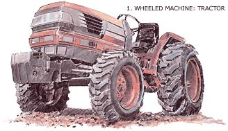 |
|
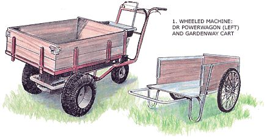 |
 |
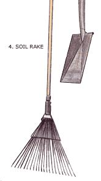 |
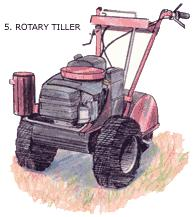 |
|
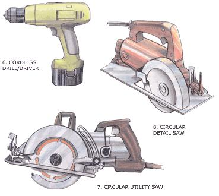 |
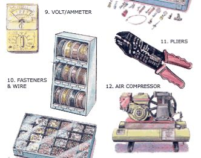 |
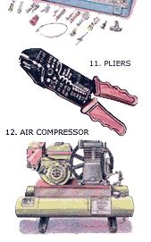 |
|
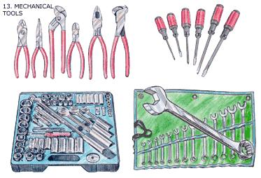 |
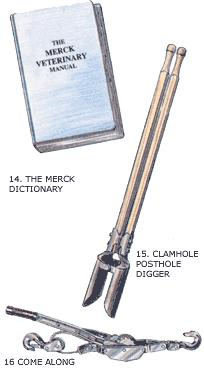 |
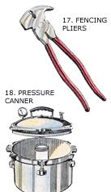 |
|
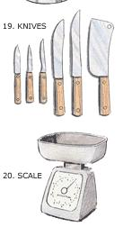 |
|
|